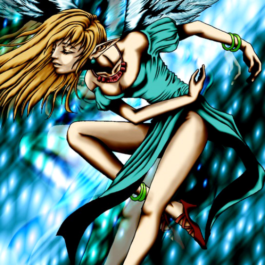

Dancing Elf

STATS
ATK: 300
DEF: 200DECK COST
Deck Cost per Card: 5Fusion List (114 Possible Fusions)
- Dancing Elf + Abyss Flower = Queen of Autumn Leaves
- Dancing Elf + Air Marmot of Nefariousness = Nekogal #2
- Dancing Elf + Ancient Brain = Dark Elf
- Dancing Elf + Ancient Jar = Mystical Sand
- Dancing Elf + Ancient Tree of Enlightenment = Queen of Autumn Leaves
- Dancing Elf + Fairywitch = Dark Elf
- Dancing Elf + Arlownay = Queen of Autumn Leaves
- Dancing Elf + Armaill = Celtic Guardian
- Dancing Elf + Armed Ninja = Celtic Guardian
- Dancing Elf + Armored Rat = Nekogal #2
- Dancing Elf + Battle Warrior = Celtic Guardian
- Dancing Elf + Bean Soldier = Queen of Autumn Leaves
- Dancing Elf + Beautiful Headhuntress = Dark Elf
- Dancing Elf + Binding Chain = Wing Egg Elf
- Dancing Elf + Boo Koo = Mystical Elf
- Dancing Elf + Curtain of the Dark Ones = Dark Elf
- Dancing Elf + Dancing Elf = Mystical Elf
- Dancing Elf + Dark Gray = Nekogal #2
- Dancing Elf + Dark Plant = Queen of Autumn Leaves
- Dancing Elf + Dark Prisoner = Dark Elf
- Dancing Elf + Dark Rabbit = Garvas
- Dancing Elf + Dark Titan of Terror = Dark Elf
- Dancing Elf + Darkworld Thorns = Queen of Autumn Leaves
- Dancing Elf + Dig Beak = Garvas
- Dancing Elf + Dissolverock = Mystical Sand
- Dancing Elf + Doron = Celtic Guardian
- Dancing Elf + Eldeen = Dark Elf
- Dancing Elf + Enchanting Mermaid = Dark Witch
- Dancing Elf + Eyearmor = Celtic Guardian
- Dancing Elf + Firegrass = Queen of Autumn Leaves
- Dancing Elf + Flower Wolf = Nekogal #2
- Dancing Elf + Fusionist = Nekogal #2
- Dancing Elf + Gate Deeg = Garvas
- Dancing Elf + Goddess of Whim = Dark Witch
- Dancing Elf + Goddess with the Third Eye = Dark Witch
- Dancing Elf + Griggle = Queen of Autumn Leaves
- Dancing Elf + Guardian of the Labyrinth = Dark Elf
- Dancing Elf + Hane-Hane = Nekogal #2
- Dancing Elf + Haniwa = Mystical Sand
- Dancing Elf + Happy Lover = Dark Witch
- Dancing Elf + Harpie Lady = Winged Egg of New Life
- Dancing Elf + Hoshiningen = Mystical Elf
- Dancing Elf + Hourglass of Courage = Dark Witch
- Dancing Elf + Hourglass of Life = Mystical Elf
- Dancing Elf + Illusionist Faceless Mage = Dark Elf
- Dancing Elf + Kagemusha of the Blue Flame = Celtic Guardian
- Dancing Elf + Kageningen = Celtic Guardian
- Dancing Elf + Key Mace #2 = Dark Elf
- Dancing Elf + Key Mace = Mystical Elf
- Dancing Elf + Kurama = Winged Egg of New Life
- Dancing Elf + Lady of Faith = Dark Witch
- Dancing Elf + Laughing Flower = Queen of Autumn Leaves
- Dancing Elf + Left Arm of the Forbidden One = Dark Elf
- Dancing Elf + Lord of D. = Dark Witch
- Dancing Elf + Little Chimera = Nekogal #2
- Dancing Elf + Living Vase = Queen of Autumn Leaves
- Dancing Elf + Lord of the Lamp = Dark Elf
- Dancing Elf + Lord of Zemia = Dark Elf
- Dancing Elf + Lunar Queen Elzaim = Mystical Elf
- Dancing Elf + M-Warrior #1 = Celtic Guardian
- Dancing Elf + M-Warrior #2 = Celtic Guardian
- Dancing Elf + Magician of Faith = Mystical Elf
- Dancing Elf + Man-Eating Plant = Queen of Autumn Leaves
- Dancing Elf + Man Eater = Queen of Autumn Leaves
- Dancing Elf + Masaki the Legendary Swordsman = Celtic Guardian
- Dancing Elf + Mask of Darkness = Dark Elf
- Dancing Elf + Masked Clown = Dark Elf
- Dancing Elf + Megirus Light = Dark Elf
- Dancing Elf + Meotoko = Garvas
- Dancing Elf + Milus Radiant = Nekogal #2
- Dancing Elf + Minomushi Warrior = Mystical Sand
- Dancing Elf + Moon Envoy = Celtic Guardian
- Dancing Elf + Morphing Jar = Mystical Sand
- Dancing Elf + Mushroom Man = Queen of Autumn Leaves
- Dancing Elf + Mystic Lamp = Dark Elf
- Dancing Elf + Mystical Capture Chain = Mystical Elf
- Dancing Elf + Mystical Sheep #1 = Nekogal #2
- Dancing Elf + Mystical Sheep #2 = Nekogal #2
- Dancing Elf + Nemuriko = Dark Elf
- Dancing Elf + Petit Angel = Mystical Elf
- Dancing Elf + Phantom Dewan = Dark Elf
- Dancing Elf + Pot the Trick = Mystical Sand
- Dancing Elf + Princess of Tsurugi = Celtic Guardian
- Dancing Elf + Queen's Double = Celtic Guardian
- Dancing Elf + Rainbow Flower = Queen of Autumn Leaves
- Dancing Elf + Ray & Temperature = Dark Witch
- Dancing Elf + Sectarian of Secrets = Dark Elf
- Dancing Elf + Silver Fang = Nekogal #2
- Dancing Elf + Skelengel = Dark Witch
- Dancing Elf + Sleeping Lion = Nekogal #2
- Dancing Elf + Spirit of the Harp = Dark Witch
- Dancing Elf + Succubus Knight = Dark Witch
- Dancing Elf + Swordsman from a Foreign Land = Celtic Guardian
- Dancing Elf + Synchar = Nekogal #2
- Dancing Elf + Tenderness = Mystical Elf
- Dancing Elf + Tentacle Plant = Queen of Autumn Leaves
- Dancing Elf + That Which Feeds on Life = Dark Elf
- Dancing Elf + The Little Swordsman of Aile = Celtic Guardian
- Dancing Elf + The Unhappy Maiden = Mystical Elf
- Dancing Elf + The Wicked Worm Beast = Garvas
- Dancing Elf + Time Wizard = Mystical Elf
- Dancing Elf + Unknown Warrior of Fiend = Dark Elf
- Dancing Elf + Vishwar Randi = Celtic Guardian
- Dancing Elf + Water Element = Dark Witch
- Dancing Elf + Water Girl = Dark Witch
- Dancing Elf + Weather Control = Mystical Elf
- Dancing Elf + White Dolphin = Ice Water
- Dancing Elf + Wilmee = Nekogal #2
- Dancing Elf + Wing Egg Elf = Mystical Elf
- Dancing Elf + Winged Egg of New Life = Dark Witch
- Dancing Elf + Wolf = Nekogal #2
- Dancing Elf + Wood Clown = Celtic Guardian
- Dancing Elf + Wretched Ghost of the Attic = Dark Elf
- Dancing Elf + Yashinoki = Queen of Autumn Leaves